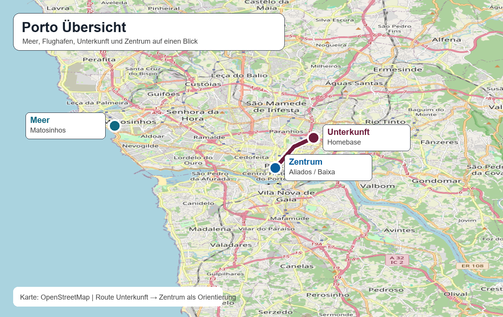
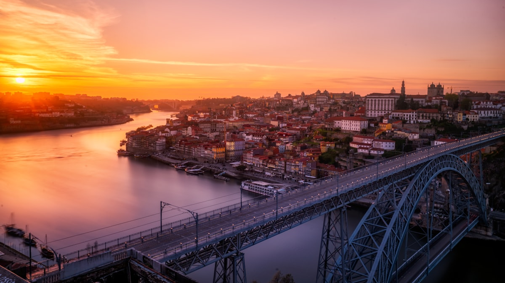
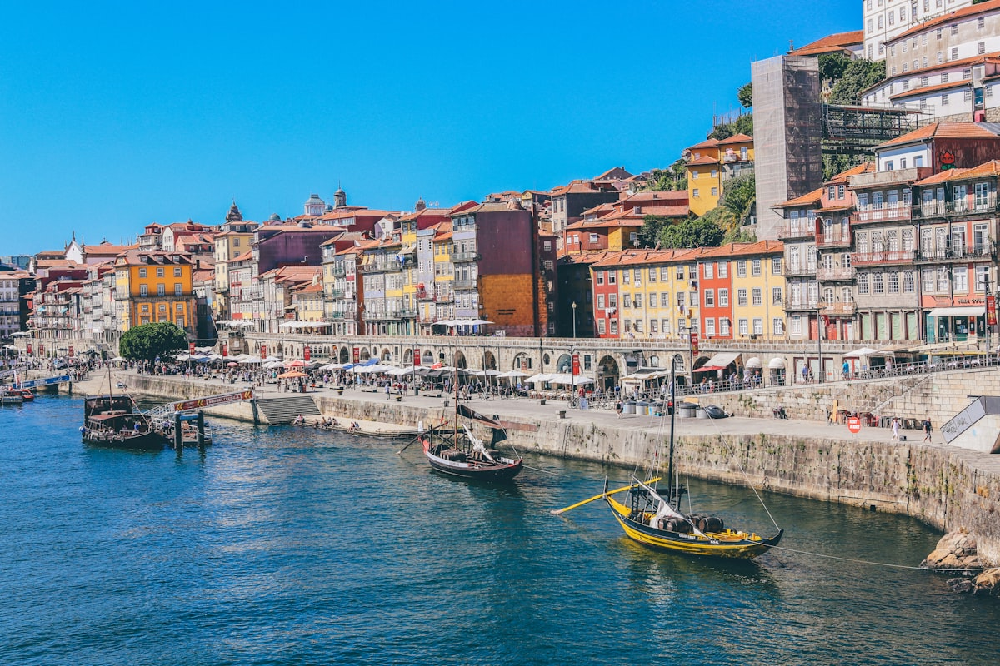
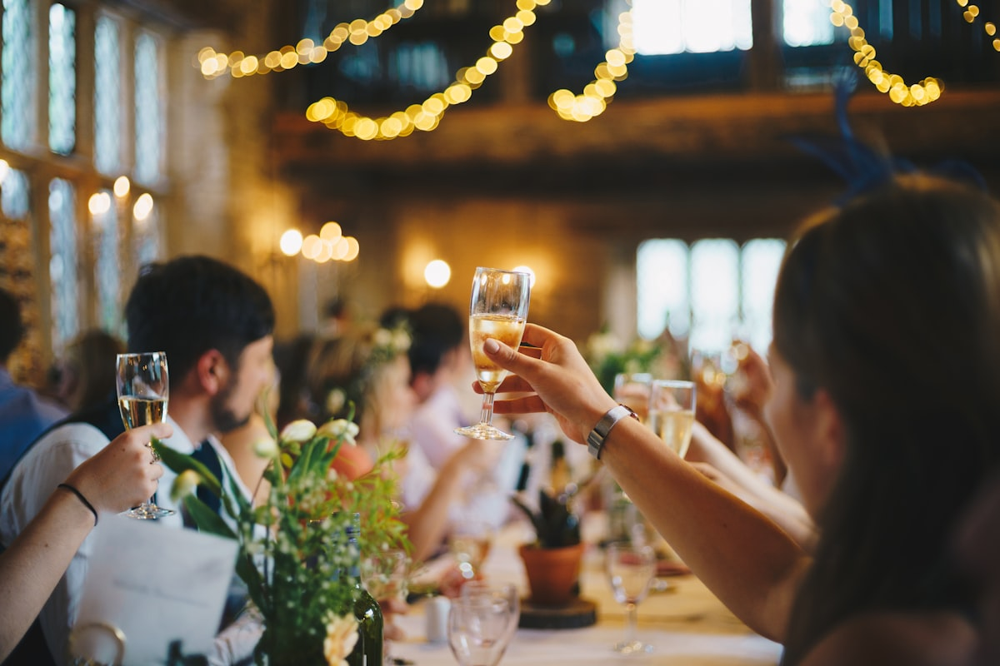
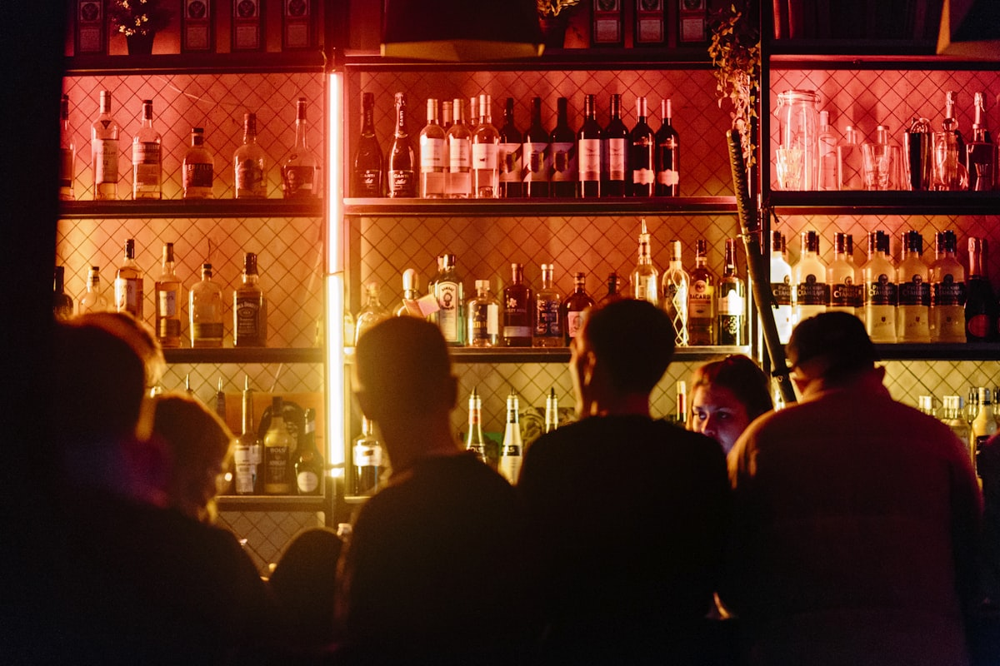
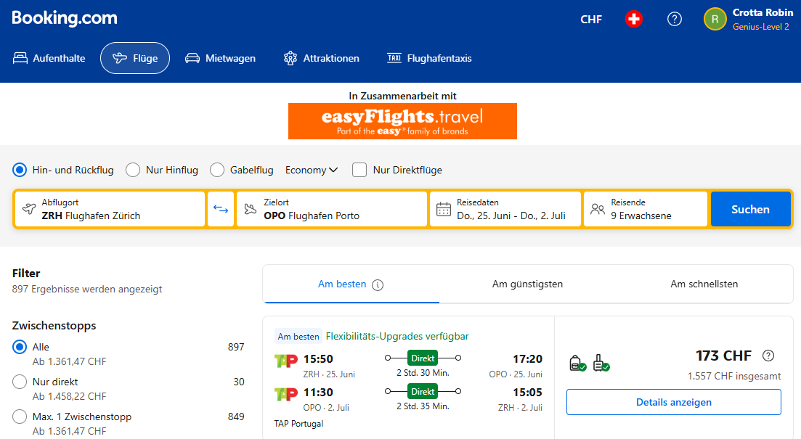
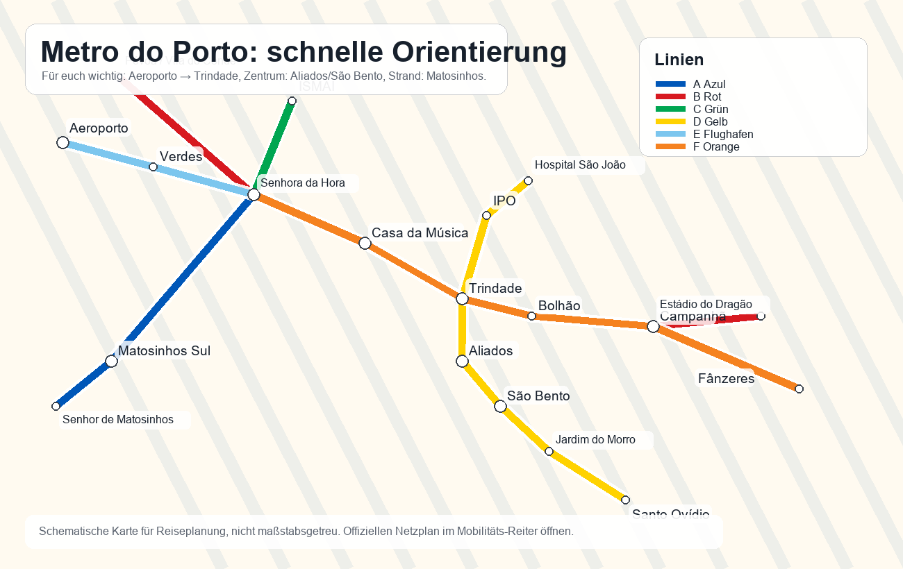
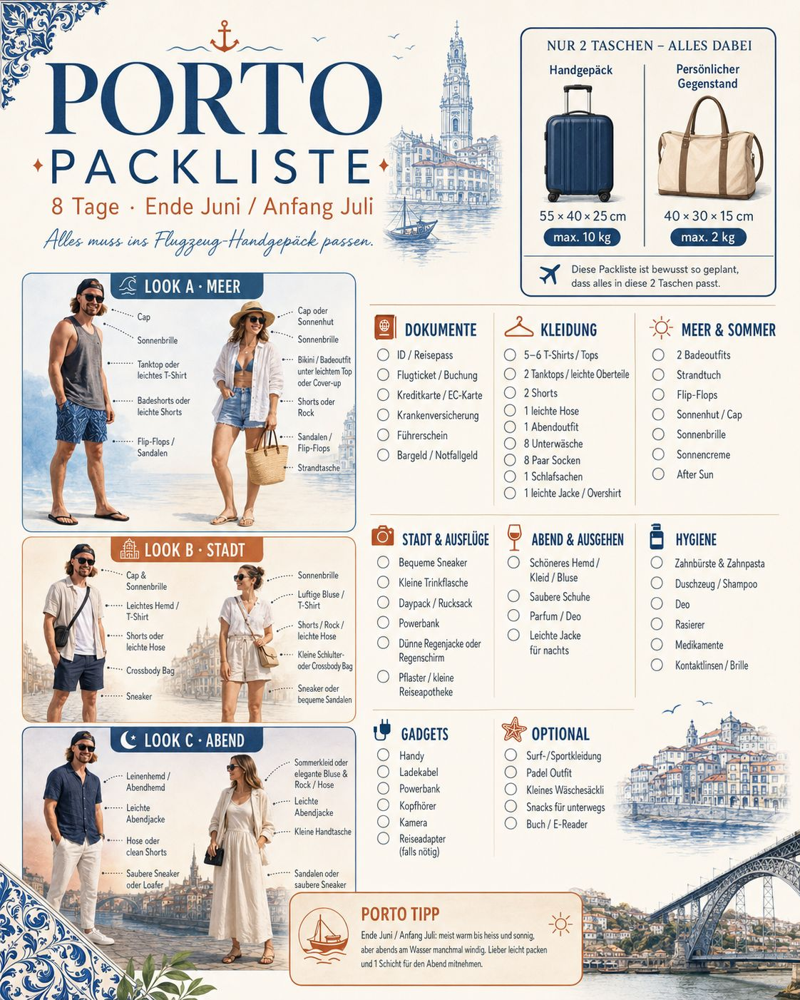

Hinflug | TAP TP921 | Donnerstag, 25. Juni
ZRHZürich
→
OPOPorto
Treffpunkt13:45
Abflug15:50
Ankunft17:20
Der kompakte Reiseplan: Programm, Reiseinfos, Abstimmungs-Aktivitäten, Clubs & Bars und ein schneller SOS-Bereich.




Flugdaten und Unterkunft sind organisiert. Die Seite nutzt deshalb definitiv den Zeitraum 25. Juni bis 2. Juli 2026.
Sonntag locker, Montag Douro-Weintour, Dienstag Meer/Sport, Mittwoch letzte Runde und gemeinsames Abschlussessen.
Bei 16 Personen vorher Slots klären: Restaurant, Boot, Surf, Padel/Karting und Club-Eintritt werden sonst schnell mühsam.
Fixe Punkte, Ideen und Live-Wetter pro Tag. Änderungen kommen direkt in den HTML-Code und bleiben für alle gleich.
Unterkunft, Flug, Mobilität, Packliste und Klassenliste sind hier zusammengefasst, damit die App weniger Reiter hat.
Unterkunft nordöstlich vom Zentrum. Für Baixa, Aliados und Ribeira sind Uber/Bolt nachts am einfachsten; tagsüber Metro/Bus je nach Route.
Exakte Adresse, Türcode, Check-in-Zeit, Schlüsselübergabe und Hausregeln hier eintragen.

Ruhezeiten, Abfall, wer hat Schlüssel, wer kontrolliert am Check-out.
Kabinenkoffer 55 × 40 × 25 cm, max. 10 kg. Persönlicher Gegenstand 40 × 30 × 15 cm, max. 2 kg. Flüssigkeiten 100 ml im 1-L-Beutel.
Fixer Zeitraum: 25. Juni bis 2. Juli 2026. Am Rückflugmorgen früh genug Check-out, Gepäck und Transfers organisieren.


Linie E ab Flughafen Richtung Trindade, Linie D für Aliados/São Bento/Gaia, Linie A Richtung Matosinhos/Strand.
Mit Metro E bis Trindade und je nach Lage weiter mit Metro/zu Fuss. Für 16 Personen mit Gepäck sind 3–4 Uber/Bolt oft entspannter.
Für Clubnächte Treffpunkt setzen und Autos splitten. Baixa-Gassen sind eng, darum Abholpunkt vorher festlegen.

Die Grafik ist als schnelle Übersicht direkt eingebunden: Handgepäck, persönlicher Gegenstand, Looks für Meer/Stadt/Abend und die wichtigsten Kategorien zum Abhaken.
ID/Pass, Boardingpass, Krankenkassenkarte, Bankkarte, etwas Bargeld, Airbnb-Adresse offline, Notfallkontakt.
7x Unterwäsche/Socken, 5–6 Shirts, 2 kurze Hosen, 1 lange Hose, Hemd/Polo, Hoodie/leichte Jacke.
Badehose, Mikrofaser-Strandtuch, Sonnencreme SPF 30/50, Sonnenbrille, Sneakers, Flipflops, Sportshirt.
Handy, Ladegerät, Powerbank, Kopfhörer. Portugal nutzt EU-Stecker.
Zahnbürste, Deo, Reiseapotheke, Pflaster, persönliche Medikamente, Ohropax.
Gemeinsame Liste: wer nimmt Box, Speaker, Karten, Erste-Hilfe, Ball, Sonnencreme-Reserve?
Gruppenbuchung = über die gemeinsame Buchung. Eigene Buchung = Buchung durch jeweilige Person.
Vor dem Verschicken an Externe prüfen: Geburtstage sind persönliche Daten. Für den Klassenchat ist es ok, öffentlich würde ich die Spalte entfernen.
Die WhatsApp-Abstimmung ist übernommen. Douro Valley bleibt als Montag-Idee oben, weil dort am meisten Interesse da ist.
Die Karte zeigt die wichtigsten Suchpunkte für die Aktivitäten. Die einzelnen Karten unten haben direkte Google-Maps-Links zum jeweiligen Spot oder Suchbereich.
Echte Google-Maps-Karte plus kurze Einschätzung zu Musikstil, Gruppentauglichkeit und Lage. Vor Clubnächten Line-up/Instagram prüfen.
Für eine grosse Gruppe ist Baixa/Galerias am einfachsten: viele Bars nah beieinander, später kann man in Plano B, Gare oder Pérola Negra wechseln.
Wichtige Nummern und Orte für Portugal. Im echten Notfall immer zuerst 112 wählen.
Polizei, Ambulanz und Feuerwehr. Funktioniert in Portugal und in der EU.
112 anrufenHospital São João
+351 225 512 100
Alameda Prof. Hernâni Monteiro, Porto
Porto Airport / OPO
+351 229 432 400
Für verlorenes Gepäck, Rückflug und Transfer.
Homebase-Koordinaten: 41.1694244, -8.5923396. Adresse/Code im Reiseinfos-Reiter ergänzen.
Fallback-Treffpunkt eintragen, z.B. Aliados oder São Bento. Nach Clubnächten nicht allein heimlaufen.
Name der Unterkunft, Türcode, Kontaktperson, Allergien/Medikamente und Notfallkontakt der Gruppe hier ergänzen.